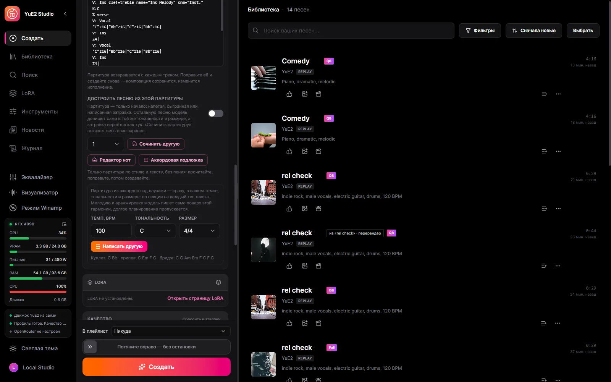

Партитура, которую можно править

Композиция возвращается в нотации ABC и отрисовывается нотами.
Десктопная студия для YuE2 — открытой модели, которая сначала пишет партитуру, а потом поёт.
Windows 10/11 x64 и видеокарта с 6 ГБ видеопамяти: NVIDIA (GTX 900 и новее) через CUDA; AMD и Intel через Vulkan — экспериментально. Модели скачиваются из самой студии, когда вы решите.

Сделаны на чистой установке с рекомендованным набором, как их сохранила студия. На английском, испанском, китайском, японском и русском.
Композиция возвращается в нотации ABC и отрисовывается нотами.

SheetSage2 записывает мелодию записи в партитуру, YuE2 поёт её в вашем стиле.

Песня, стем или обработанная версия превращается в многодорожечный MIDI — 34 группы инструментов и ударные — моделью MuScriptor на вашей видеокарте.

Песни одного артиста или стиля превращаются в LoRA на вашей видеокарте — тренером и рецептом HOT-Step.

Трек без своей обложки получает бесплатное фото CC0 с Wikimedia Commons под свой стиль, узор в одном из 21 стиля или обложку, сгенерированную через OpenRouter.

Подключите Claude Code, Claude Desktop или Cursor — и агент делает всё, что умеет студия: пишет и генерирует песни, заполняет датасет и обучает, рисует обложки, собирает клипы в видеоредакторе, включает песни, а ещё видит окно и нажимает его кнопки.
Сама студия — на вашем языке.



Windows 10/11 x64 и видеокарта с 6 ГБ видеопамяти: NVIDIA (GTX 900 и новее) через CUDA; AMD и Intel через Vulkan — экспериментально. Модели скачиваются из самой студии, когда вы решите.
Рабочий набор — бэкбон YuE2-3B и VAE; SheetSage2 необязателен и нужен только для каверов.
| Ваша видеокарта | Набор | Скачать |
|---|---|---|
| 12 GB+ | Полный оригинал — BF16, исходные веса | 9.7 GB |
| 8 GB+ | Качество — Q8_0, почти без потерь | 4.9 GB |
| 7 GB+ | Сбалансированный — Q6_K | 4.0 GB |
| 5.5 GB+ | Лёгкий — Q5_K_M | 3.6 GB |
Размеры с учётом SheetSage2. Студия сама предложит набор, который потянет ваша карта, но скачивание — всегда ваше решение. Каждый файл сверяется по SHA-256 с зафиксированной ревизией Hugging Face, прерванная загрузка докачивается.
Да. Студия бесплатная и с открытым кодом, модели скачиваются бесплатно прямо из неё.
Ваша музыка — ваша, и она остаётся на вашем диске.
Студия и yue2.cpp — MIT. Веса YuE2-3B и YuE2 VAE — CC BY-NC 4.0 с разрешением для отдельных авторов: музыканты и авторы, работающие сами по себе, могут продавать и монетизировать сделанные песни; компаниям нужна лицензия от авторов модели. SheetSage2 для каверов — CC BY-NC 4.0.
Песни одного артиста или стиля превращаются в LoRA на вашей видеокарте — тренером и рецептом HOT-Step. Каждую настройку можно поменять, датасеты переносятся между этой студией и MiniMax Music3 Studio.
Подключите Claude Code, Claude Desktop или Cursor — и агент делает всё, что умеет студия: пишет и генерирует песни, заполняет датасет и обучает, рисует обложки, собирает клипы в видеоредакторе, включает песни, а ещё видит окно и нажимает его кнопки. Правила письма для модели идут в комплекте, поэтому стили и тексты агент пишет сам. Выберите агента ассистентом — и тексты он будет писать вместо локальной модели.
По умолчанию всё локально. Облачный ключ добавляете вы — для той функции, которую выберете.
| Часть | Где работает | Размер |
|---|---|---|
| Движок YuE2 (yue2.cpp) | Видеокарта: CUDA, Vulkan или процессор | в комплекте |
| Набор моделей YuE2 | Ваша видеокарта | 3.6–9.7 ГБ |
| NVIDIA cuBLAS | Только карты NVIDIA | 391 МБ, один раз |
| Тайминги караоке — Parakeet или Whisper | Ваш компьютер | по желанию |
| Разделение на стемы — HT-Demucs | Видеокарта или процессор | по желанию |
| Помощник по текстам | Локальная Gemma или OpenRouter | по желанию |
| Обучение LoRA — HOT-Step ace-train | NVIDIA RTX 30 и новее, 11 ГБ видеопамяти | 8 ГБ, по желанию |
| Описание песен на слух — MOSS-Music-8B | около 12 ГБ видеопамяти | 10 ГБ, по желанию |
| VST3-хост — HOT-Step | Ваш компьютер, отдельный процесс | в комплекте |
| Аудио в MIDI — MuScriptor (HOT-Step ace-midi) | NVIDIA GTX 16 / RTX 20 и новее | 0.5–5.6 ГБ, по желанию |
Сервис вкомпилирован в десктопный exe и присматривает за движком на C++. Готовые песни импортирует сам сервис, поэтому результат не теряется при перезагрузке или закрытом окне.
React UI ─┐
├─ YuE2-Studio.exe (Tauri window + Rust/Axum service)
Rust axum ┘ │
└─ yue2.cpp `yue-server` (C++/CUDA, GGUF)